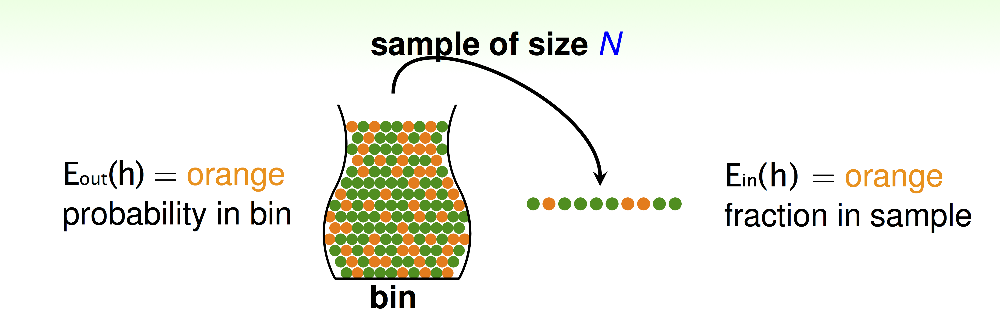

Machine Learning Techniques: Support Vector Machine (SVM)
Linear SVM
Our goal is to find largest-margin separating hyperplane.
Distance to Hyperplane: distance(\(x,b,w) = \frac{1}{\lVert w\rVert}|w^Tx+b|\)
Standard Large-Margin Problem
Now the problem becomes:


Support Vector Machine

Dual Support Vector Machine
\[\text{SVM} \equiv \min\limits_{b,w} (\max\limits_{\text{all}\,\alpha_n \ge 0} \mathcal{L}(b,w,\alpha))\]
Lagrange Dual Problem
for any fixed \(\alpha'\) with all \(\alpha'_n\ge\) 0,
\[\min\limits_{b,w} (\max\limits_{\text{all}\,\alpha_n \ge 0} \mathcal{L}(b,w,\alpha)) \ge \min\limits_{b,w}\mathcal{L}(b,w,\alpha')\]
for best \(\alpha'\ge 0\) on RHS,
\[\min\limits_{b,w} (\max\limits_{\text{all}\,\alpha_n \ge 0} \mathcal{L}(b,w,\alpha)) \ge \max\limits_{\text{all}\,\alpha_n \ge 0}(\min\limits_{b,w} \mathcal{L}(b,w,\alpha))\]
Strong duality of Quadratic Programming
\[\min\limits_{b,w} (\max\limits_{\text{all}\,\alpha_n \ge 0} \mathcal{L}(b,w,\alpha)) \ge \max\limits_{\text{all}\,\alpha_n \ge 0}(\min\limits_{b,w} \mathcal{L}(b,w,\alpha))\]
- '>=': weak duality
- '=': strong duality, true for QP if
- convex primal
- feasible primal
- linear constraints
Dual Formulation of Support Vector Machine:


Machine Learning Foundations - Mathematical Foundations
- (1) The Learning Problem
- (2) Learning to answer Yes or No
- (3) Types of Learning
- (4) Feasibility of Learning
- (5) Training versus Testing
- (6) Theory of generalization
- Bounding Function
- (7) VC dimension
The course, called Machine Learning Foundations - Mathematical Foundations, is taught by Hsuan-Tien Lin on Cousera course info page.
As the name of the course indicates, the course teaches the most fundamental algorithmic, theoretical, mathematical background of machine learning.
The article summaries the key concepts and conclusions in the course. Each section in the article corresponding to one chapter in the course.
(1) The Learning Problem
Formalize the Learning Problem
Basic Notations:
- input: \(x\in\mathcal{X}\)
- output: \(y\in\mathcal{Y}\)
- unknown pattern to be learned \(\Leftrightarrow\) target function: \(f:\mathcal{X}\rightarrow\mathcal{Y}\)
- data \(\Leftrightarrow\) training examples: \(\mathcal{D}={(x_1,y_1),(x_2,y_2),...,(x_N,y_N)}\)
- hypothesis \(\Leftrightarrow\) skill with hopefully good performance: \(g: \mathcal{X}\rightarrow \mathcal{Y}\)
Machine Learning: use data \(\mathcal{D}\) to compute hypothesis \(g\) that approximates target \(f\).

Machine Learning and other Fields
- Machine Learning: use data to compute hypothesis \(g\) that approximates target \(f\)
- Data Mining: Use (huge) data to find property that is interesting
\(\Longleftrightarrow\)If 'interesting property' same as 'hypothesis that approximate target', Machine Learning = Data Mining
\(\Longleftrightarrow\) If 'interesting property' related to 'hypothesis that approximate target', data mining can help machine learning.
\(\Longleftrightarrow\) traditional data mining also focuses on efficient computation in large database.
(2) Learning to answer Yes or No
Perceptron Hypothesis Set
Vector Form of Perceptron Hypothesis:
\[h(x) = \text{sign}(\sum\limits_{i=0}^dw_ix_i)=\text{sign}(W^Tx)\]
(3) Types of Learning
Learning with Different Output Space
- binary classification: \(\mathcal{Y}=\{-1,+1\}\)
- multiclass classification: \(\mathcal{Y}=\{1, 2,..., K\}\)
- regression: \(\mathcal {Y} =\mathbb{R}\)
- structured learning: \(\mathcal{Y}=\) structures
Learning with Different Data Label
- supervised: all \(y_n\)
- unsupervised: no \(y_n\)
- semi-supervised: some \(y_n\)
- reinforcement: implicit \(y_n\) by goodness (\(\hat y_n\))
Learning with Different Protocol
Protocol \(\Longleftrightarrow\) Learning Philosophy.
- batch: all known data
- online: sequential (passive) data
- active: strategically-observed data
Learning with Different Input Space
- concrete: sophisticated (and related) physical meaning e.g. user features(age, sex, education level)
- raw: simple physical meaning e.g. image features
- abstract: no (or little) physical meaning e.g. user/image IDs
(4) Feasibility of Learning
Learning outside training examples
No Free Lunch: Learning from \(D\) (\(D\): training examples) (to infer something outside \(D\)) is doomed to fail if any unknown \(f\) can happen.
- \(g\approx f\) inside \(D\): Possible!
- \(g\approx f\) outside \(D\): Impossible!
In and out of sample error
For any fixed \(h\), in 'big' data (N large), in-sample error \(E_{in}(h)\) is probably close to out-of-sample error \(E_{out}(h)\) (within \(\epsilon\)):
\(P(|E_{in}(h)-E_{out}(h)|> \epsilon) \le 2\exp(-2\epsilon^2N)\)
The equation above is called Hoeffding's Inequality. The statement \(E_{in}(h)=E_{out}(h)\) is probably approximately correct (PAC, 大概近似正确).
If large \(N\), we can probably infer unknown \(E_{out}(h)\) by known \(E_{in}(h)\).
in-sample error \(E_{in}(h)\) denotes orange fraction in sample, out-of-sample error \(E_{out}(h)\) denotes orange probability in bin, When we want to infer the orange probability in bin.

Connection to Real Learning
Bad data for One \(h\):
\(E_{out}(h)\) and \(E_{in}(h)\) far away: e.g. \(E_{out}\) big (far from \(f\)), but \(E_{in}\) small (correct on most examples).
Bad data for many \(h\):
\(\Leftrightarrow\) no 'freedom of choices' by learning algorithm \(\mathcal{A}\)
\(\Leftrightarrow\) there exists some \(h\) such that \(E_{out}(h)\) and \(E_{in}(h)\) far away
Bound of BAD data
Form \(M\) hypotheses, what is the bound of \(\mathbb{P}_{\mathcal{D}} [\text{BAD} \; \mathcal{D}]\)

The union bound WIKI (布尔不等式), also known as Boole's inequality, says that for any finite or countable set of events, the probability that at least one of the events happens is no greater than the sum of the probabilities of the individual events.
The Statistical Learning Flow
If \(|\mathcal{H}|=M\) finite, \(N\) large enough, for whatever \(g\) picked by \(\mathcal{A}\), \(E_{out}(g)\approx E_{in}(g)\)
if \(\mathcal{A}\) finds one \(g\) with \(E_{in}(g)\approx 0\),
PAC gaurantee for \(E_{out}(g)\approx 0\) \(\rightarrow\) learning possilbe!
(5) Training versus Testing
For batch and supervised binary classification, \(g\approx f\Longleftrightarrow E_{out}(g)\approx 0\) achieved through \(E_{out}(g)\approx E_{in}(g)\) and \(E_{in}(g)\approx 0\).
In order to achieve two conditions above, learning split to two central questions:
- Can we make sure that \(E_{out}(g)\) is close enough to \(E_{in}(g)\)?
- Can we make \(E_{in}(g)\) small enough?
In order to understand trade-off for 'right' \(\mathcal{H}\), we establish a finite quantity that replace \(M\),
\[\mathbb{P}[|E_{in}9g)-E_{out}(g)|>\epsilon] \le 2\cdot m_\mathcal{H} \cdot \exp(-2\epsilon^2 N)\]
Dichotomy
Define hypothesis set \(\mathcal{H}\):
\(\mathcal{H}=\{\text{hypothesis}\quad h: \mathcal{X}\rightarrow{\text{x,o}}\}\)
And we call hypothesis 'limited' to the eyes of \(x_1, x_2,..., x_N\) a dichtonomy:
\[h(x_1,x_2,...,x_N)=(h(x_1),h(x_2),...,h(x_N)) \in\{\text{x,o}\}^N\]
Corresponding dichotomies \(\mathcal{H}(x_1,x_2,...,x_N)\) is all dichotomies implemented by \(\mathcal{H}\) on \(x_1,x_2,...,x_N\):
Note: hypotheses \(\mathcal{H}\) and \(\mathcal{H}(x_1,x_2,...,x_N)\) are different!
Growth function
Growth functions remove its dependence on inputs \((x_1,x_2,...,x_N)\), by taking max of all possible \((x_1,x_2,...,x_N)\):
\[m_\mathcal{H}(N) = \max\limits_{x_1,x_2,...,x_N\in\mathcal{X}}|\mathcal{H}(x_1,x_2,...,x_N)|\]
Growth function is finite, its upper-bound is \(2^N\).
Growth functions in different situation:
- positive rays: \(m_\mathcal{H}(N)=N+1\)
- positive intervals: \(m_\mathcal{H}(N)=\frac{1}{2}N^2+\frac{1}{2}N+1\)
- convex sets: \(m_\mathcal{H}(N)=2^N \)
- 2D perceptrons: \(m_\mathcal{H}(N)=2^N \text{in some cases}\)
Shatter and Break point
If no \(k\) inputs can be shattered by \(\mathcal{H}\) , call \(k\) a break point for \(\mathcal{H}\).
if \(m_H(K) < 2^k\), call k a break point for \(\mathcal{H}\).
- since \(k\) is a break point, \(k+1, k+2, k+3,...,\) also break points
minimum break points for different \(\mathcal{H}\):
- positive rays: k=2
- positive intervals: k=3
- convex sets: none
- 2D perceptrons: k=4
(6) Theory of generalization
Bounding Function
Bounding Function \(B(N,k)\) is maximum possible \(m_\mathcal{H}(N)\) when break point \(=k\).
\[B(N,k) \le \sum\limits_{i=0}^{k-1} C^N_i\]
For \(fixed k, B(N,k)\) upper bounded by \(ploy(N)\), \(\rightarrow m_{\mathcal{H}}(N)\) is \(poly(N)\) if break point exists.
When N large enough,
\[P[\exists h\in \mathcal{H} s.t. |E_{in}(h)-E_{out}(h)|> \epsilon]\le 4 m_\mathcal{H}(2N)\exp(-\frac{1}{8}\epsilon^2N)\]
The above equation called Vapnik-Chervonenkis (VC) bound.
(7) VC dimension
VC dimension, the formal name of maximum non-break point, denoted \(d_{VC}(\mathcal{H})\), is
\[\text{largest N for which } m_{\mathcal{H}}(N)=2^N\]
- positive rays: \(d_{VC}=1\)
- positive intervals: \(d_{VC}=2\)
- convex sets: \(d_{VC}= \infty \)
- 2D perceptrons: \(d_{VC}=3\)
- d dimension Perceptrons: \(d_{VC}=d+1\)
Interpreting VC Dimension


主动学习
主动学习算法通过迭代抽样，主动寻找有利于提升效果的样本，从而减少了训练集的大小。
获取训练样本不仅费时、费力，而且训练集包含大量的冗余样本。
主动学习算法主要分为两阶段：第一阶段为初始化阶段，随机从未标注样本中选取小部分，由督导者\(\mathcal{S}\)标注，作为训练集建立初始分类器模型；第二阶段为循环查询阶段，督导者\(\mathcal{S}\)从未标注样本集\(U\)中，按照某种查询标准\(Q\)，选取一定的未标注样本进行标注，并加到训练样本集\(L\)中，重新训练分类器，直至达到训练停止标准为止。
Reference
- LIU Kang, QIAN Xu, WANG Ziqiang. Survey on active learning algorithms. Computer Engineering and Applications, 2012, 48（34）：1-4.
- Zongwei Zhou1, Jae Shin1, Lei Zhang, et al. 2017. Fine-tuning Convolutional Neural Networks for Biomedical Image Analysis: Actively and Incrementally. CVPR. pdf

Copyright © 2015 Powered by MWeb, Theme used GitHub CSS.